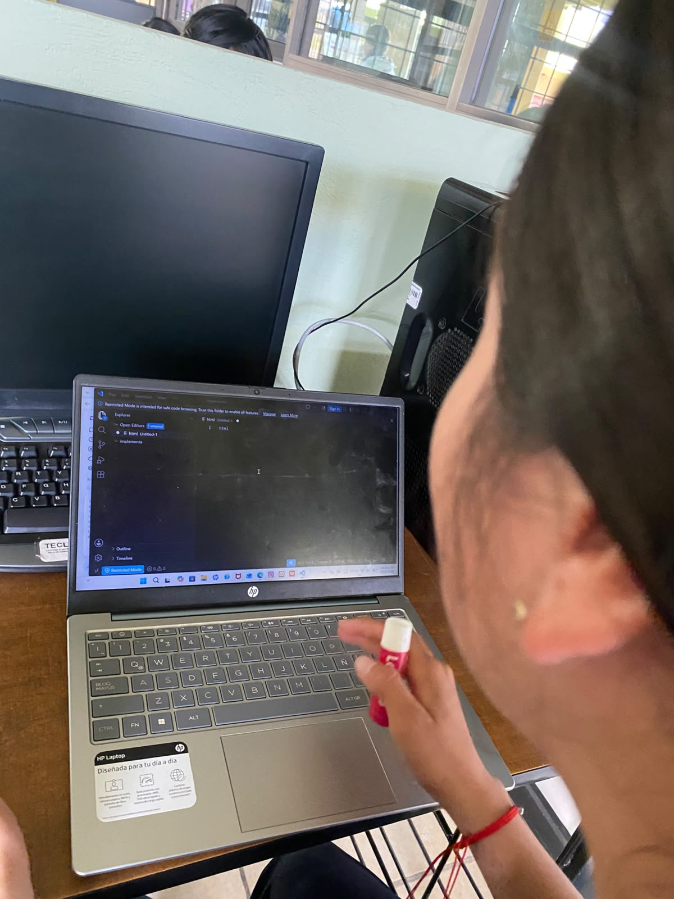
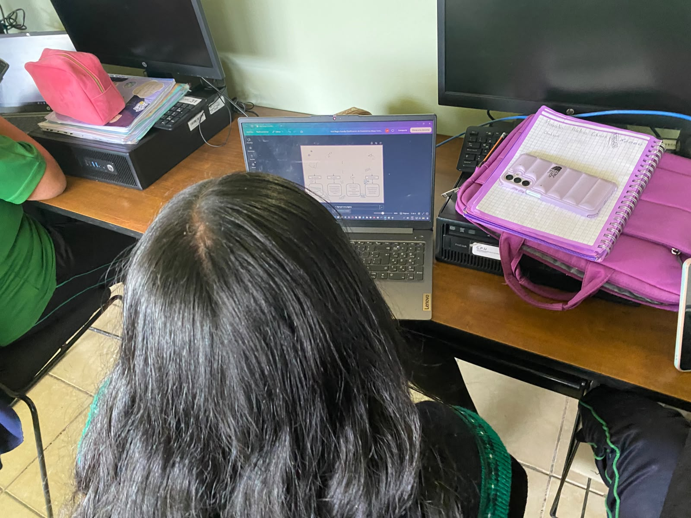

Bienvenidos 💚
CECYTEM — Grupo 503
Este proyecto está dedicado a la prevención del embarazo en la adolescencia, con información clara, veraz y diseñada para ti. Aquí encontrarás todo lo que necesitas saber para cuidar tu salud, tomar decisiones informadas y construir el futuro que deseas.
Nuestro propósito
Romper el silencio, eliminar mitos y brindar herramientas para que cada joven sea protagonista de su propia vida. No estás sol@ 💚
Explora nuestro contenido
- Definición y contexto del embarazo adolescente
- Causas principales y factores de riesgo
- Consecuencias en la salud, educación y vida cotidiana
- Guía completa de métodos anticonceptivos
- Nuestra campaña: mensajes, objetivos y actividades
- Galería: conoce al equipo del Grupo 503
- Chat informativo: respuestas a tus dudas en cualquier momento
📷Imágenes
📷 Imágenes del proyecto
¿Qué es el Embarazo Adolescente?
Definición según la OMS
La Organización Mundial de la Salud define el embarazo adolescente como aquel que ocurre en personas con edades comprendidas entre los 10 y los 19 años. Se divide en dos etapas:
- Embarazo temprano: en menores de 15 años. Es el grupo de mayor riesgo, ya que el cuerpo aún está en pleno desarrollo físico y biológico.
- Embarazo tardío: entre los 15 y los 19 años. Aunque el cuerpo está más desarrollado, sigue considerándose de mayor riesgo que en la edad adulta.
¿Por qué es un tema de salud pública?
El embarazo adolescente representa uno de los retos más importantes en México y el mundo. No es solo un asunto médico, sino también social, económico y cultural. Cada embarazo en la adolescencia refleja oportunidades perdidas: educación, desarrollo personal y proyectos de vida. Prevenirlo es responsabilidad de todos.
Situación en México
México tiene una de las tasas más altas de embarazo adolescente entre los países de la OCDE. Según datos oficiales:
- El embarazo es una de las principales causas de abandono escolar en jóvenes mujeres.
- En muchas comunidades, la falta de información y servicios de salud cercanos aumenta el riesgo.
- Las adolescentes que continúan estudiando tienen muchas más probabilidades de romper el ciclo de pobreza.
¿Por qué sucede?
No hay una sola causa. Es una combinación de factores que van desde la falta de educación sexual hasta las condiciones del entorno familiar y social. En las siguientes secciones profundizaremos en cada uno.
Causas del Embarazo Adolescente
1. Falta de Educación Sexual Integral
Muchos jóvenes reciben información incompleta, errónea o nula sobre sexualidad, reproducción y métodos de protección. Esto genera confusión, miedo y decisiones tomadas sin conocimiento. La educación sexual no se limita a prevenir embarazos: también enseña sobre el cuerpo, el respeto, el consentimiento y los derechos.
2. Uso incorrecto o nulo de métodos anticonceptivos
Existe desconocimiento sobre cómo funcionan, dónde conseguirlos y cuáles son los más adecuados. Muchos jóvenes creen mitos que ponen en riesgo la salud. La vergüenza de preguntar en farmacias o centros de salud también impide acceder a protección.
3. Inicio temprano de relaciones sexuales sin protección
La edad promedio de inicio de relaciones sexuales en México es cada vez más temprana. Cuando ocurre sin la información ni la protección adecuada, el riesgo de embarazo e infecciones aumenta considerablemente.
4. Presión social y de pareja
Influyen el entorno, las amistades, la influencia de redes sociales y la presión dentro de la relación. En algunos casos, la falta de autonomía para decir "no" o pedir protección determina situaciones de riesgo.
5. Violencia y abuso sexual
Una proporción importante de embarazos en menores de 15 años está relacionada con situaciones de violencia o abuso. En estos casos, el embarazo no es decisión de la persona, sino consecuencia de un delito que debe denunciarse.
6. Entorno familiar y cultural
Familias donde el tema no se habla, donde la educación sexual se considera "tabú", o donde se normaliza el embarazo joven como única opción de vida. También influyen la pobreza y la falta de acceso a oportunidades educativas y laborales.
¿Por qué sucede? En resumen
El embarazo adolescente no ocurre "por casualidad". Ocurre cuando falta información, cuando se cierran puertas al diálogo, cuando no hay acceso a servicios y cuando se normaliza la falta de protección. Cambiar esto depende de que todos hablemos claro, sin miedo y sin juzgar.
Consecuencias del Embarazo Adolescente
🏥 Para la salud física
- Mayor riesgo de complicaciones: preclampsia, anemia, parto prematuro, hemorragias.
- Riesgo para el bebé: bajo peso al nacer, menor desarrollo, mayor riesgo de enfermedades.
- Sistema reproductivo aún en desarrollo: el cuerpo de la adolescente no ha terminado de crecer, lo que dificulta el embarazo y el parto.
- Mayor riesgo de mortalidad materna e infantil en comparación con mujeres adultas.
🧠 Para la salud emocional y mental
- Sentimientos de miedo, soledad, incertidumbre y ansiedad.
- Cambios de humor intensos y depresión posparto.
- Presión familiar y social que puede generar aislamiento.
- Interrupción de proyectos personales y sueños postergados.
📚 En la educación y futuro
- Es la causa principal de abandono escolar en jóvenes mujeres en México.
- Menor probabilidad de terminar la preparatoria o ingresar a la universidad.
- Menos oportunidades laborales y salarios más bajos en la adultez.
- El ciclo se repite: hijas e hijos de madres adolescentes tienen mayor probabilidad de repetir el patrón si no reciben apoyo.
💰 En la economía y la vida cotidiana
- Carga económica para la familia y la persona joven.
- Dependencia prolongada de otras personas.
- Limitación de tiempo y energía para estudiar o trabajar.
- Impacto en la calidad de vida de toda la familia.
💛 Pero no todo está perdido
Si bien las consecuencias son serias, no definen tu vida. Existen apoyos, becas, programas de salud y personas dispuestas a ayudar. Muchas jóvenes han salido adelante: han terminado sus estudios, han trabajado y han construido un futuro. El embarazo cambia planes, pero no cancela sueños.
Métodos Anticonceptivos — Tipos y Ejemplos
Los métodos anticonceptivos son herramientas que permiten decidir cuándo y si tener hijos. Además, el condón protege contra infecciones de transmisión sexual (ITS). Conócelos y elige el que mejor se adapte a ti.
🔹 1. Métodos de Barrera
Impiden que el esperma llegue al óvulo. Son los únicos que protegen contra ITS.
- Condón masculino: Se coloca en el pene. Efectividad: ~98% si se usa bien. El único que protege contra embarazo e ITS.
- Condón femenino: Se introduce en la vagina. Eficacia similar al masculino. Protege contra ITS.
- Diafragma: Dispositivo de silicona que cubre el cuello uterino. Se usa con espermicida. Requiere consulta médica.
🔹 2. Métodos Hormonales
Libera hormonas que impiden la ovulación. No protegen contra ITS.
- Píldora anticonceptiva: Se toma todos los días a la misma hora. Eficacia: +99% si no se olvida ninguna dosis.
- Inyección: Mensual o trimestral. Fácil de usar, pero requiere acudir a aplicarla.
- Parche: Se pega en la piel y se cambia cada semana.
- Implante subdérmico: Varilla pequeña bajo la piel del brazo. Dura de 3 a 5 años. Uno de los más seguros.
- Anillo vaginal: Se coloca dentro de la vagina cada mes. Libera hormonas de forma constante.
🔹 3. Métodos Intrauterinos
Dispositivos colocados dentro del útero por un médico. Larga duración.
- DIU de cobre: No tiene hormonas. Dura hasta 10 años. Muy confiable.
- DIU hormonal: Libera hormonas localmente. Dura de 3 a 5 años. Puede disminuir cólicos y flujo menstrual.
🔹 4. Métodos de Emergencia
Para situaciones excepcionales, NO de uso frecuente.
- Píldora del día después: Se toma tras relación sin protección o fallo del método. Funciona mejor cuanto antes: idealmente en las primeras 24 horas, hasta 72 horas después.
🔹 5. Métodos Naturales y de Planificación
Menos confiables. No protegen contra ITS.
- Calendario menstrual, temperatura basal, observación del moco cervical.
- Retirar el pene antes de la eyaculación: NO es seguro — el líquido preseminal ya contiene espermatozoides.
- La tasa de fallo es muy alta, especialmente en jóvenes con ciclos irregulares.
💡 Recomendaciones clave
- ✅ Combina condón + otro método = doble protección.
- ✅ Acude al centro de salud: la mayoría son gratuitos.
- ✅ No tengas vergüenza de preguntar: los profesionales están para ayudarte.
- ✅ Ningún método es 100% seguro excepto la abstinencia. Usar varios aumenta mucho la protección.
Campaña de Prevención del Embarazo Adolescente — Grupo 503 💚
Nuestra Frase
"Tu futuro es primero, infórmate, cuídate, decide."
🎯 Misión
Informar, orientar y acompañar a las y los jóvenes del CECYTEM para que tomen decisiones libres, responsables e informadas sobre su salud reproductiva. Queremos que nadie se sienta sol@ y que la prevención sea una costumbre, no un tabú.
🌟 Visión
Lograr que nuestra comunidad escolar cuente con educación sexual completa, sin miedos ni prejuicios. Que cada joven conozca sus derechos, sepa protegerse y tenga la confianza para preguntar, planear y construir el futuro que merece.
📋 Objetivos de la Campaña
- Informar con claridad: Explicar qué es el embarazo adolescente, sus causas y consecuencias, usando lenguaje sencillo y sin jergas.
- Dar a conocer los métodos anticonceptivos: Dónde conseguirlos, cómo funcionan y cuáles protegen también contra infecciones.
- Romper mitos: Desmentir creencias falsas que ponen en riesgo la salud de los jóvenes.
- Fomentar el diálogo: Animar a hablar en casa, con amigos y en la escuela sobre sexualidad sin vergüenza.
- Promover el acceso a servicios: Informar dónde hay atención médica amigable y gratuita para jóvenes.
- Empoderar: Recordar que cada persona tiene derecho a decidir sobre su cuerpo y su vida.
📢 Actividades que Realizaremos
- Carteles e infografías: Material visual colocado en espacios visibles de la escuela con información resumida y mensajes positivos.
- Pláticas con profesionales: Invitación de personal de salud para responder dudas de forma directa y respetuosa.
- Distribución de folletos: Resumen con datos clave, métodos anticonceptivos y lugares de ayuda.
- Espacios de diálogo: Encuentros donde podamos compartir inquietudes sin ser juzgados, respetando siempre la confidencialidad.
- Este sitio web: Información disponible en cualquier momento para consulta de todos.
💚 Mensajes Clave
- 🔹 Infórmate antes de decidir: el conocimiento te da poder.
- 🔹 Usar protección no te hace menos libre: te hace más responsable.
- 🔹 Preguntar no es de tontos: es de personas que quieren cuidarse.
- 🔹 Tu cuerpo, tu decisión: nadie debe presionarte.
- 🔹 Pedir ayuda es valentía, no debilidad.
- 🔹 Tienes derecho a soñar, estudiar y crecer: tu futuro es lo más valioso.
📞 ¿Dónde buscar ayuda?
- 🏥 Centros de salud cercanos — atención gratuita y confidencial
- 📞 Línea de la Vida — escucha y orientación gratuita las 24 horas
- 🏫 Orientadores y orientadoras del CECYTEM
- 💙 Personal médico y enfermería de la institución
- 👨👩👧👦 Familiares de confianza
Mitos y Realidades Grupo 503 💚
🌟 MITOS Y REALIDADES
❌ Mito: "Solo pasa a quienes no tienen cuidado"
El embarazo adolescente puede ocurrir incluso cuando se cree que se toman precauciones, por falta de información correcta, uso inadecuado de métodos anticonceptivos o creencias equivocadas. No es un castigo ni ocurre solo a ciertas personas; la desinformación afecta a todos y todas.
✅ Realidad: La información protege tu futuro
Conocer cómo funcionan tu cuerpo, tus derechos y los métodos anticonceptivos confiables te da el poder de elegir cuándo y si quieres formar una familia. Estar bien informad@ reduce riesgos y te permite seguir cumpliendo tus metas personales y profesionales.
❌ Mito: "Es fácil interrumpir los estudios y retomarlos después"
En la práctica, combinar la crianza, las responsabilidades del hogar y el estudio es muy difícil. Muchas personas no logran retomar la educación a tiempo, lo que limita sus oportunidades laborales y personales. Prevenir te da más libertad para elegir tu camino.
✅ Realidad: Tienes derecho a vivir tu juventud plena
Tu etapa de crecimiento, aprendizaje y sueños es valiosa. Planear con tiempo te permite disfrutar, formarte, crecer y construir la vida que deseas, sin prisa ni presiones. Tú decides el ritmo de tu vida.
❌ Mito: "Si te pasa, estás sol@"
El estigma y el silencio hacen sentir soledad, pero no tienes que enfrentarlo así. Existen personas, instituciones y espacios de confianza dispuestos a escucharte, orientarte y acompañarte sin juzgarte. Buscar ayuda es un acto de valentía, no de debilidad.
✅ Realidad: Prevenir es cuidarte
Hablar de salud reproductiva, preguntar, informarte y usar protección no es algo de lo que avergonzarse. Es responsabilidad contigo mism@ y con quienes te rodean. La prevención es la mejor herramienta para que tu futuro sea como tú sueñes.
Galería de Desarrolladores 💻

Trabajando en el código 💚
Trabajando 💚 Trabajando 💚
Trabajando 💚
 Trabajando 💚
Trabajando 💚
 Trabajando 💚
Trabajando 💚
 Trabajando 💚
Trabajando 💚
 Trabajando 💚
Trabajando 💚
CENTROS DE SALUD 💚
📍 Encuéntranos cerca de ti — Villa Victoria
"Tu salud no tiene que esperar: conoce dónde acudir."
🏥 Centro de Salud / Hospital Municipal Guadalupe Victoria Bicentenario
Dirección: Calle Lázaro Cárdenas N°25, Col. Centro, C.P. 50960, Villa Victoria, Estado de México
Teléfono: 726 251 5202
Horario: Atención continua las 24 horas, los 7 días de la semana
Servicios: Consulta general, salud reproductiva, planificación familiar, métodos anticonceptivos, orientación sin discriminación
🏥 UMF No. 243 IMSS Villa Victoria
Dirección: Av. Lázaro Cárdenas S/N, Barrio de Jesús María, C.P. 50960, Villa Victoria, Estado de México
Teléfono: 800 681 2525 / 726 251 5236
Horario: Lunes a Viernes de 08:00 a 20:00 hrs · Sábados y Domingos de 08:00 a 14:00 hrs
Servicios: Atención médica integral, salud sexual y reproductiva, métodos anticonceptivos, citas programadas
🏥 Centro Médico Villa Victoria
Dirección: Calle Lázaro Cárdenas, Manzana 014, Col. Jesús María, C.P. 50986, Villa Victoria, Estado de México
Teléfono: 726 251 5907
Horario: Abierto las 24 horas
Servicios: Atención médica general, orientación, acompañamiento y referencias a especialistas
💚 Lo que debes saber
✅ La atención sobre salud reproductiva, métodos anticonceptivos y orientación es confidencial, gratuita y un derecho tuyo.
✅ No necesitas autorización de nadie para preguntar, informarte o cuidarte.
✅ Si tienes dudas o necesitas apoyo, acercarte es el primer paso — no estás sol@.
📞 En caso de emergencia, marca al 911 o acude directamente al hospital más cercano.
Chat Informativo — Embarazo Adolescente 🤝
Haz clic en cualquier pregunta y obtén la respuesta 💚